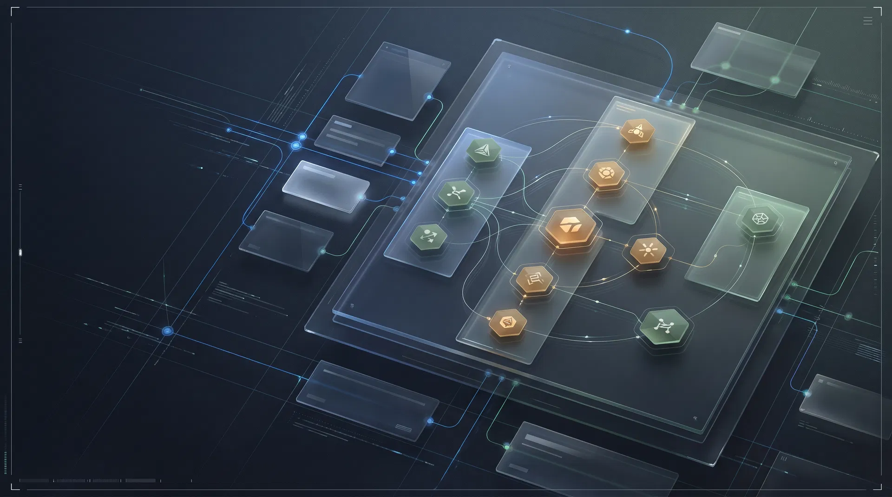
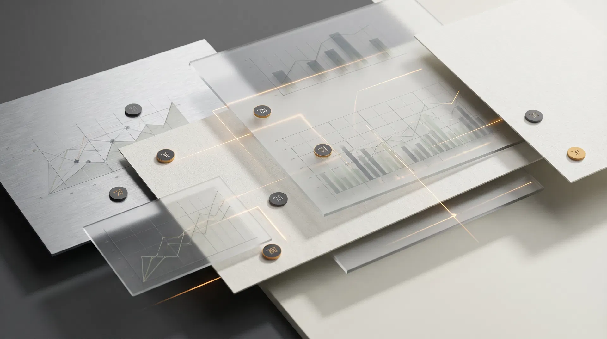
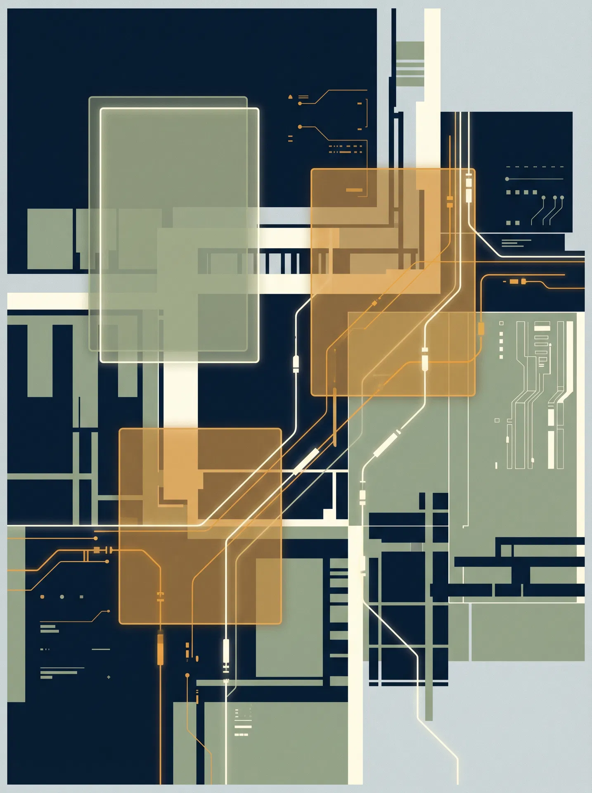

Этот сайт переводит исследование аудитории в архитектуру будущей конференции: что обязательно закрывать в программе, какие треки действительно нужны, где уместны кейсы, а где — панели, AMA и прикладные клиники.
Стоимость изменений, delivery, legacy, platform/devops, архитектура и лидерство образуют основу программы. AI усиливает её, но не подменяет.
Исследование показало: аудитория smalltech/midtech ждёт не очередную витрину технологических трендов, а программу о том, как выживать, поставлять, модернизировать и расти под ограничениями. Поэтому архитектура конференции строится вокруг операционных и организационных проблем, а не вокруг модных ярлыков.
Программа должна объяснять, как снижать стоимость изменений, как строить delivery без enterprise-избыточности, как проходить миграции без разрушения текущего бизнеса, как не терять наблюдаемость и управляемость платформы, и как масштабировать архитектуру и команду одновременно.
Отсюда вытекает принцип сайта: пользователь не просто читает рекомендации, а исследует карту решений — от боли к треку, от трека к формату, от формата к поиску спикеров.
Этот блок объединяет ключевой контент второго сайта в основной гайд: методика, профиль выборки, рейтинг болей и выводы для построения программы.
Данные собраны из опросов 6 конференций, глубинных интервью и открытых ответов о сложных инженерных задачах.
Программа должна быть про выживание, управляемость и развитие инженерной организации под ограничениями, а не про витрину абстрактных технологических новинок.
Выбери трек, чтобы увидеть его исследовательское основание, ключевые вопросы, рекомендуемые форматы и портрет спикера.

Там, где нужны маршруты и ошибки, работают case study и war story. Там, где нет одного правильного ответа, лучше панель или AMA. Там, где аудитория хочет унести инструмент, нужен workshop или clinic.

Показывает реальный путь команды, последовательность решений и цену ошибки.
Позволяет разбирать тупики, откаты, сопротивление и ошибки без полировки reality gap.
Подходит темам, где нет одного правильного рецепта и важны сравнительные практики.
Даёт участнику конкретный инструмент, фреймворк или метод разбора ситуации.
Закрывает незакрытые вопросы и помогает дожать сложные нюансы без лишней сцены.
Нужен там, где аудитории важны ориентиры, зрелостные модели и сопоставимые паттерны.
Встраивать внутрь leadership, delivery и AI — там, где нужно выравнивать бизнес и технологию.
Делать обязательным прикладным слоем внутри platform/devops, migration и AI, а не отдельной абстракцией.
Усиливать leadership, platform и architecture темами роста экспертизы, mentoring и инженерной зрелости.
Собирать как специальные блоки внутри AI и architecture, частично — как самостоятельные доклады.
Оставлять как leader-oriented секцию и HR-сателлит, но не превращать в стержень всей программы.

Ниже — практические действия: как собирать CFP, кого искать в спикеры, как удерживать баланс между технологическими и организационными болями и почему AI не должен поглотить всё пространство программы.
Собирать CFP не вокруг хайповых технологий, а вокруг инженерных и организационных сценариев боли.
Приоритизировать кейсы компаний, которые росли под ограничениями, а не только зрелые enterprise-истории.
Требовать от спикеров ответа на вопрос «что команда делала, где ошиблась и что теперь работает».
Сбалансировать программу так, чтобы технические треки не существовали отдельно от лидерства, стоимости и delivery-логики.
| Трек | Профиль спикера |
|---|---|
| Engineering Economics | CTO, Head of Engineering, Platform Lead |
| Delivery & Processes | EM, Delivery Manager, Head of Development |
| Legacy & Migration | Architect, Staff Engineer, Infra Lead |
| Platform & DevOps | Platform Engineer, SRE, DevOps Lead |
| Architecture & Scalability | Architect, Principal Engineer |
| Leadership & Org Design | CTO, VP Eng, Director of Engineering, Head of R&D |
| AI in Production | AI Lead, Applied ML Lead, Product/Engineering leader |